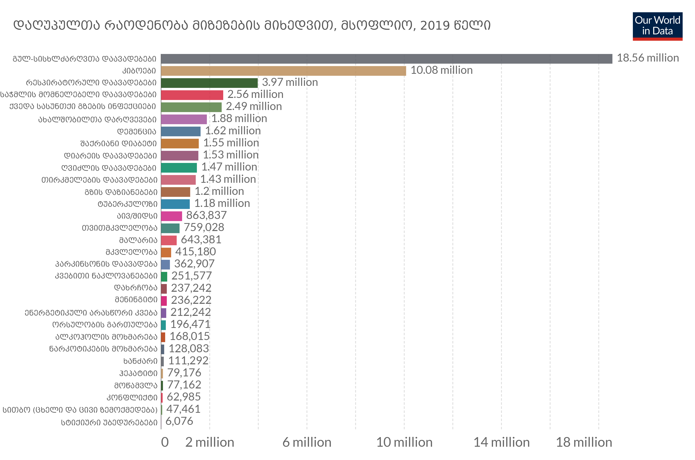
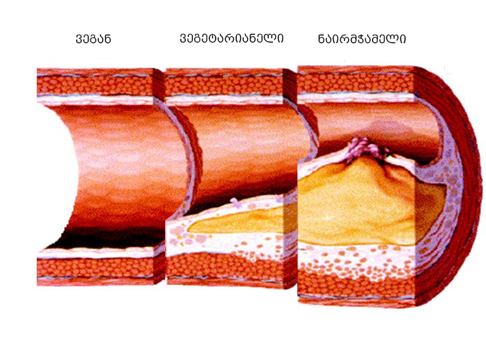
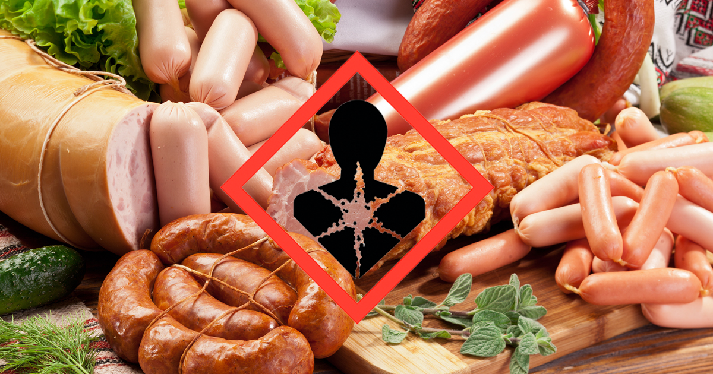
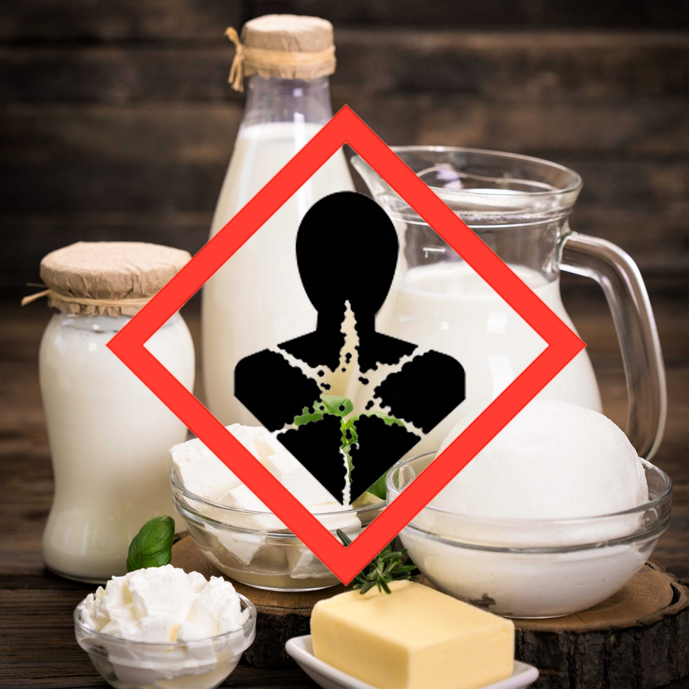
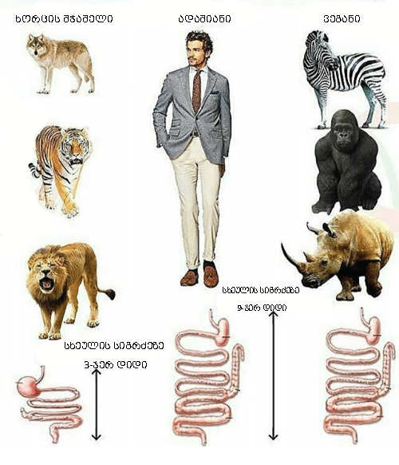
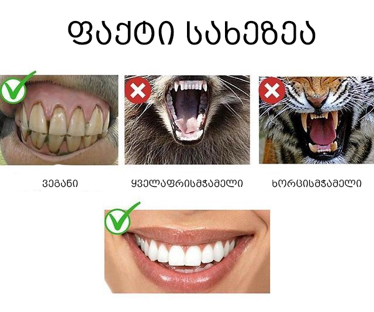

გაფრთხილაება !! ჩვენ არ გავცემთ კონკრეტულ რჩევებს ჯანმრთელობის შესახებ. თითოეული ინფორმაცია დადასტურებულია სხვადასხვა ქვექყნის სამედიცინო კვლევებით. ყოველთვის გაიარეთ რეკომენდაცია კომპეტენტურ ექიმთან ან პროფესიონალ მედიკოსთან.
სტატისტიკა

სტატისტიკა ავიღეთ Our World in Date თუ გაინტერესებთ სხვადასხვა წლის სტატისტიკა შეგიძლიათ გადახვიდეთ ლინკზე. სტატისტიკაში უნდა გავამახვილოთ ყურადღება პირველ ორ მაჩვენებელზე, ყოველწლიურად ციფრები იცვლება თუმცა გულ-სისხლძარღვთა დაავადებები და კიბო უცვლელად ლიდერობენ.
გულ-სისხძარღვთა დაავადებები

ჯანსაღი ხორცი ?
აღსაღნიშნავია ფაქტი რომ სხვადასხვა ცხოველის ხორცი სხვადასხვა დოზით აზიანებს ორგანიზმს. მაგლაითად ქათმის ხორცი გაცილებით ნაკლებად აზიანებს ვიდრე ცხვრის. თუმცა ეს იმას არნიშნავს რომ ქათმისხორცით ვერ მივალთ ფატალურ შედეგამდე !
ადამიანი იმისგან შედგება რასაც ჭამს.
სამწუხარო სიმართლე
სტატისტიკის მიხედვით გულ-სისხძარღვთა დაავადებები გარდაცვალების მიზეზად ყოველთვის ლიდერობს. უნდა გავითვალისწინოთ ფაქტი რომ გულ-სისხძარღვთა დაავადებების გამომწვევი მიზეზი 85% შემთხვევაში არის ხორცის მოხმარება, ხოლო 15% მოდის გენეტიკურ მიდრეკილებაზე. თუკი რიცხვებს დააკვირდებით და ამ ორ მაჩვენებელს განვაცალკევებთ გამოვა, ადამიანების დაღუპვის მიზეზი მსოფლიოს მაშტაბით პირველ ადგილზე არის ხორცის ჭამა !
კიბო
კანცეროგენი
სიკვდილიანობის სტატისტიკაში კიბო მეორე ადგილს იკავებს, კიბოს გამომწვევი ერთერთი მიზეზია კანციროგენის მიღება. კანცეროგენი არის ისეთი ნივთიერებები რომლებიც კიბოს იწვევს. ხოლო კარციროგენი არის თითქმის ყველა ცხოველურ პროდუქტში ესენია: ძეხვეული, ვიჩინები, სოსისი, ცხოველური რძე და ყველა რძის პროდუქტი და სხვა. ასევე კარცეროგენი ხდება ან მრავლდება საკვები კომბინაციაში მაგალითად: ხორცი + ყველი, კარტოფილი + კვერცხი, ხორცი + პური და სხვა. ახალი ხორციც კი, თვითონ არაა კანცეროგენი, მაგრამ მისი მონელება-გადამუშავების პროცესში კარგი გარემო იქმნება სიმსივნური უჯრედებისათვის. და დიახ ხორცი იწვევს სიმსიმნეს, ასევე დღესდღეისობით მიმდინარეობს კანონპრექტი როგორც სიგარეტს ასევე ხორც პროდუქტებს უნდა დაეწეროს რომ მისი მიღება კლავს.


ფაქტია ის რომ ხორცის ჭამა სიკვდილიანობის მიზეზად პირველ ადგილს იკავებს. ასევე ეს არის არასრული ჩამონათვალი თუ რა დაავადებები შეიძლება გამოიწვიოს ხორცპროდუქტებმა.
ხართუარა ხორცის მჭამელი?


პირისღრუს აგებულება
როგორც სურათზე ხედავთ ჩვენი კბილების აგებულებით ვეგანი არსებებივართ, ჩვენ კბილებს არშეუძლათ ხორცის გაგლეჯვა როგორც ხორცისმჭამელ არსებებს. ასევე ყბის მოქმედება არცერთ ხორცისმჭამელ არსებას არშეუძლია ყბის გარშემო მოძრაობა მხოლოდ ზევიდან ქვევით და ყველა ვეგანი არსება ამოძრავებს ყბას გარშემო.
მონელების სისტემა
ჩვენი მონელების სისტემა არარის აგებული ხორცის გადასამუშავებლად. ხორცის გადამუშავებას სჭირდება მოკლე გზა და დიდი ენერგია, ხოლო მცენარის გადასამუშავებლად საჭიროა დიდი გზა და ცოტა ენერგია. როდესაც ხორცის გადამუშავებას ვაიძულებთ ჩვენს მონელების სისტემას, იწყებს სასარგებლო ნივთიერებების შეწოვას მაგრამ გრძელი გზის გამო მალევე რჩება და იწყება მავნე ნივთიერებების და კარციროგენების ათვისებას. ასევე ბოსტნეულთან შედარებით ხარჯავს ძალიან ბევრ ენერგიას რაც საბოლოო ჯამში იწვევს დამოკიდებულებას. იმის გამო რომ ცხოველურ პროდუქტებს ხშირად მოიხმართ და მათ დამუშავებას სჭირდება დიდი ენერგია, ორგანიზმი თავიდანვე მზადარის ამ ენერგიის დასახარჯად თუკი მას ბოსტნეულით გამოკვებავთ ის ამ ენერგიის დახარჯვას ვერ შეძლებს, ამის გამო არსებობს ფრაზა "ხორცი თუარვჭამე ვერვძღები ". იმის შემდეგ რაც დაიწყებთ ვეგანურ დიეტას ორგანიზმი მალევე შეწყვეტს ენერგიის წინასწარ მობილიზებას და მალევე იგრძნობთ რომ გაცილებით ენერგიული გახდით.
ვაწამებთ ცხოველებს, ვანადგურებთ გარემოს და ვინადგურებთ ჯანმრთელობას, ნუთუ ეს ამად ღირს ?
უფრო მეტი ინფორმაციისთვის შეგიძლიათ უყუროთ სხვადასხვა ვიდეოებს და ფილმებს